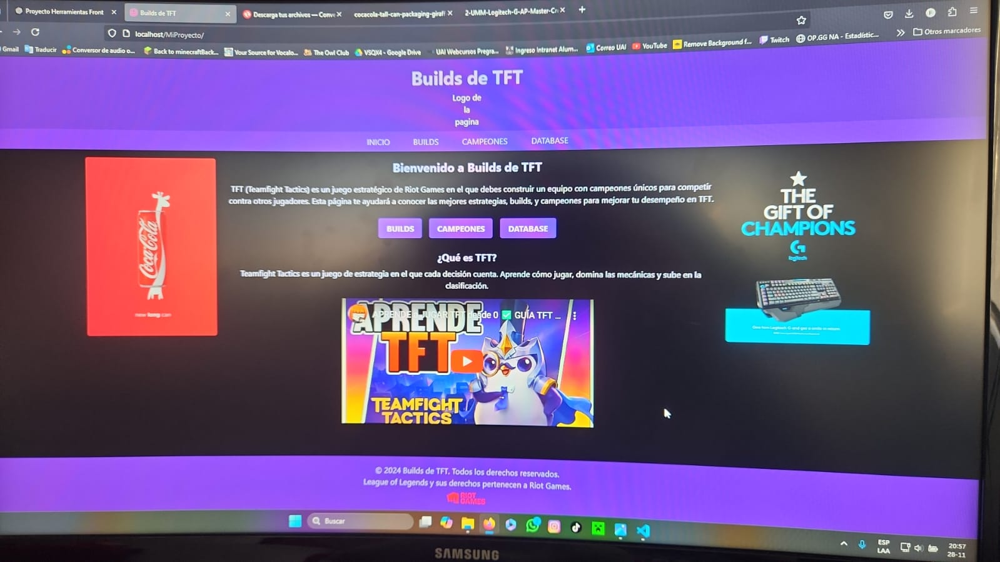
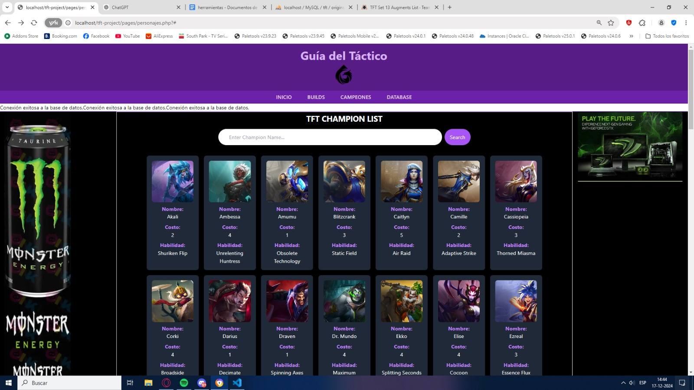

Proyecto de una página web de TFT
Esta página describe un proyecto que se hizo en grupo, que consiste en una página web dedicada al juego Teamfight Tactics (TFT), mostrando información sobre los campeones, sus habilidades y estrategias de juego.
Repositorio del proyecto en GitHub
Imagenes de la página web:

